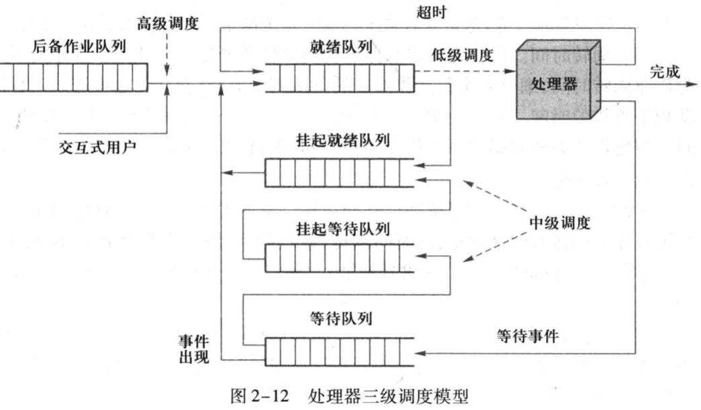
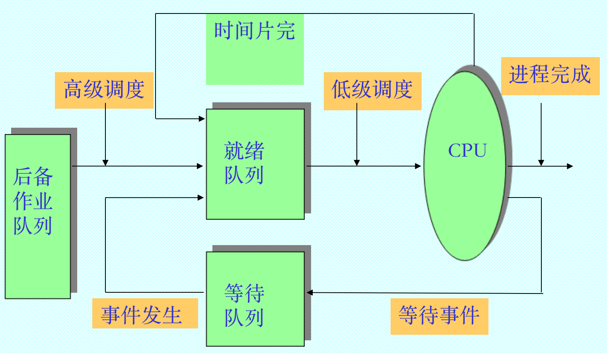
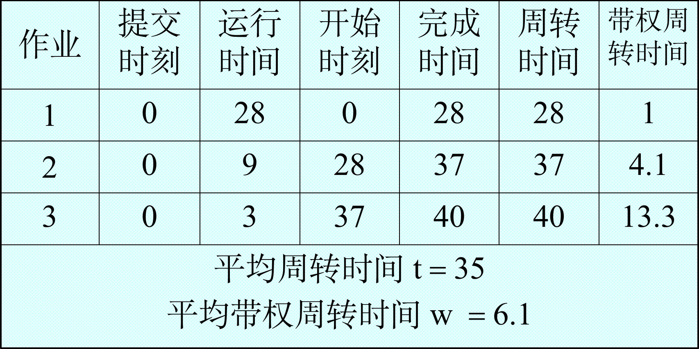
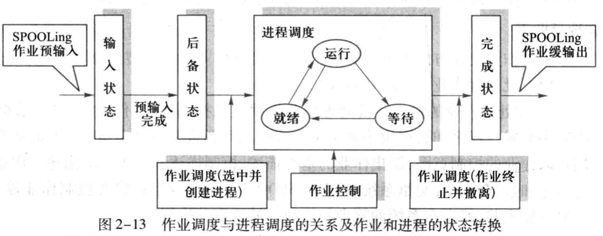
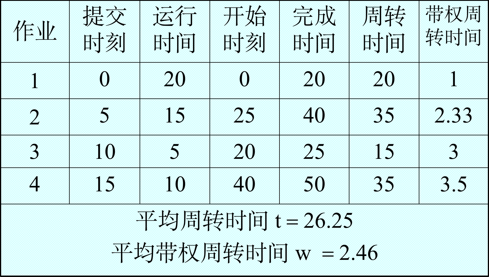
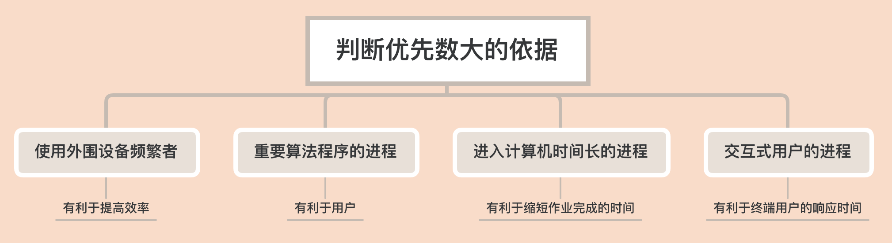
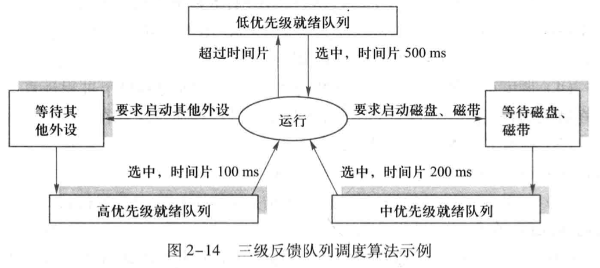

<!DOCTYPE html>
<html>
<head><meta name="generator" content="Hexo 3.8.0">
  <!-- hexo-inject:begin --><!-- hexo-inject:end --><meta charset="utf-8">
  

  
  <title>OS--处理器管理（5）_处理器调度 | DongXuehui&#39;s Blog</title>
  <meta name="viewport" content="width=device-width, initial-scale=1, maximum-scale=1">
  <meta name="description" content="OS—处理器管理（5）_处理器调度知识点：  处理器调度层次 选择调度算法的原则 作业管理与调度 低级调度功能和类型 作业调度和低级调度算法  处理器调度层次可分为三级：高级调度，中级调度，低级调度 高级调度（high level scheduling） 又称作业调度，长程调度。高级调度将控制多道程序的道数，被选择进入内存的作业越多，每个作业获得的CPU时间就越少。当有作业执行完毕并撤离时，作业调">
<meta name="keywords" content="操作系统">
<meta property="og:type" content="article">
<meta property="og:title" content="OS--处理器管理（5）_处理器调度">
<meta property="og:url" content="http://dongxh.cn/2020/04/23/OS-处理器管理（5）-处理器调度/index.html">
<meta property="og:site_name" content="DongXuehui&#39;s Blog">
<meta property="og:description" content="OS—处理器管理（5）_处理器调度知识点：  处理器调度层次 选择调度算法的原则 作业管理与调度 低级调度功能和类型 作业调度和低级调度算法  处理器调度层次可分为三级：高级调度，中级调度，低级调度 高级调度（high level scheduling） 又称作业调度，长程调度。高级调度将控制多道程序的道数，被选择进入内存的作业越多，每个作业获得的CPU时间就越少。当有作业执行完毕并撤离时，作业调">
<meta property="og:locale" content="zh-CN">
<meta property="og:image" content="http://dongxh.cn/2020/04/23/OS-处理器管理（5）-处理器调度/1.png">
<meta property="og:image" content="http://dongxh.cn/2020/04/23/OS-处理器管理（5）-处理器调度/2.png">
<meta property="og:image" content="http://dongxh.cn/2020/04/23/OS-处理器管理（5）-处理器调度/4.png">
<meta property="og:image" content="http://dongxh.cn/2020/04/23/OS-处理器管理（5）-处理器调度/3.png">
<meta property="og:image" content="http://dongxh.cn/2020/04/23/OS-处理器管理（5）-处理器调度/5.png">
<meta property="og:image" content="http://dongxh.cn/2020/04/23/OS-处理器管理（5）-处理器调度/6.png">
<meta property="og:image" content="http://dongxh.cn/2020/04/23/OS-处理器管理（5）-处理器调度/7.png">
<meta property="og:updated_time" content="2020-04-23T04:26:03.004Z">
<meta name="twitter:card" content="summary">
<meta name="twitter:title" content="OS--处理器管理（5）_处理器调度">
<meta name="twitter:description" content="OS—处理器管理（5）_处理器调度知识点：  处理器调度层次 选择调度算法的原则 作业管理与调度 低级调度功能和类型 作业调度和低级调度算法  处理器调度层次可分为三级：高级调度，中级调度，低级调度 高级调度（high level scheduling） 又称作业调度，长程调度。高级调度将控制多道程序的道数，被选择进入内存的作业越多，每个作业获得的CPU时间就越少。当有作业执行完毕并撤离时，作业调">
<meta name="twitter:image" content="http://dongxh.cn/2020/04/23/OS-处理器管理（5）-处理器调度/1.png">
  
    <link rel="alternate" href="/atom.xml" title="DongXuehui&#39;s Blog" type="application/atom+xml">
  
  
    <link rel="icon" href="/favicon.png">
  
  
    <link href="//fonts.googleapis.com/css?family=Source+Code+Pro" rel="stylesheet" type="text/css">
  
  <link rel="stylesheet" href="/css/style.css"><!-- hexo-inject:begin --><!-- hexo-inject:end -->
</head>
</html>
<body>
  <!-- hexo-inject:begin --><!-- hexo-inject:end --><div id="container">
    <div id="wrap">
      <header id="header">
  <div id="banner"></div>
  <div id="header-outer" class="outer">
    <div id="header-title" class="inner">
      <h1 id="logo-wrap">
        <a href="/" id="logo">DongXuehui&#39;s Blog</a>
      </h1>
      
    </div>
    <div id="header-inner" class="inner">
      <nav id="main-nav">
        <a id="main-nav-toggle" class="nav-icon"></a>
        
          <a class="main-nav-link" href="/">Home</a>
        
          <a class="main-nav-link" href="/archives">Archives</a>
        
      </nav>
      <nav id="sub-nav">
        
          <a id="nav-rss-link" class="nav-icon" href="/atom.xml" title="RSS Feed"></a>
        
        <a id="nav-search-btn" class="nav-icon" title="搜索"></a>
      </nav>
      <div id="search-form-wrap">
        <form action="//google.com/search" method="get" accept-charset="UTF-8" class="search-form"><input type="search" name="q" class="search-form-input" placeholder="Search"><button type="submit" class="search-form-submit">&#xF002;</button><input type="hidden" name="sitesearch" value="http://dongxh.cn"></form>
      </div>
    </div>
  </div>
</header>
      <div class="outer">
        <section id="main"><article id="post-OS-处理器管理（5）-处理器调度" class="article article-type-post" itemscope itemprop="blogPost">
  <div class="article-meta">
    <a href="/2020/04/23/OS-处理器管理（5）-处理器调度/" class="article-date">
  <time datetime="2020-04-23T04:19:04.000Z" itemprop="datePublished">2020-04-23</time>
</a>
    
  <div class="article-category">
    <a class="article-category-link" href="/categories/Operating-System/">Operating System</a>
  </div>

  </div>
  <div class="article-inner">
    
    
      <header class="article-header">
        
  
    <h1 class="article-title" itemprop="name">
      OS--处理器管理（5）_处理器调度
    </h1>
  

      </header>
    
    <div class="article-entry" itemprop="articleBody">
      
        <h1 id="OS—处理器管理（5）-处理器调度"><a href="#OS—处理器管理（5）-处理器调度" class="headerlink" title="OS—处理器管理（5）_处理器调度"></a>OS—处理器管理（5）_处理器调度</h1><p>知识点：</p>
<ul>
<li>处理器调度层次</li>
<li>选择调度算法的原则</li>
<li>作业管理与调度</li>
<li>低级调度功能和类型</li>
<li>作业调度和低级调度算法</li>
</ul>
<h2 id="处理器调度层次"><a href="#处理器调度层次" class="headerlink" title="处理器调度层次"></a>处理器调度层次</h2><p>可分为三级：高级调度，中级调度，低级调度</p>
<p><strong>高级调度</strong>（high level scheduling）</p>
<p>又称作业调度，长程调度。高级调度将控制多道程序的道数，被选择进入内存的作业越多，每个作业获得的CPU时间就越少。当有作业执行完毕并撤离时，作业调度会选择一个或者多个作业补充进入内存。此外，CPU空闲时间超过一定阈值时，系统也会引出作业调度选择后备作业。</p>
<p><strong>中级调度</strong>（medium level scheduling）</p>
<p>又称平衡调度，中程调度。中程调度将控制内存中容纳的进程数，并完成外存和内存中的进程对换工作。内存资源紧张，则换出暂时不能运行的进程（<strong>挂起状态</strong>）；内存资源富裕且具备运行条件，重新调回内存。</p>
<p>起到短期均衡系统负载的作用，充分提高内存利用率和系统吞吐率。</p>
<p><strong>低级调度</strong>（low level scheduling）</p>
<p>又称进程/线程调度，短程调度，处理器调度。根据具体算法决定<strong>就绪队列</strong>中哪个进程/线程获得处理器。<strong>低级调度是操作系统最核心部分</strong>，其调度策略的优劣直接影响系统性能。这部分代码<strong>常驻内存</strong>。</p>
<p>高级调度和低级调度为一般操作系统所必需（两级调度模型）。中级调度存在于功能完善的有更高效率追求的系统中（三级调度模型）。</p>
<p></p>
<p></p>
<h2 id="选择调度算法原则"><a href="#选择调度算法原则" class="headerlink" title="选择调度算法原则"></a>选择调度算法原则</h2><p>下面五条选择调度算法原则中，前三条是面向系统的性能指标，后两条是面向用户的性能指标。</p>
<ol>
<li>资源利用率<br>让CPU和各种资源尽可能并行工作，使得资源的利用率尽可能提高。在一定的I/O操作等待时间的比率下，运行程序的道数越多，CPU空闲时间所占的百分比越低。</li>
<li>吞吐率<br>单位时间内，CPU处理作业的个数。显然，所处理的长作业多则吞吐率低，短作业多则吞吐率高。</li>
<li>公平性<br>确保每个进程都能获得合理的CPU份额和其他资源份额，不会出现<strong>饥饿现象</strong>。</li>
<li>响应时间<br>交互式进程从提交一个请求(命令)到接收到响应之间的时间间隔称响应时间。使交互式用户的响应时间尽可能短，或尽快处理实时任务。这是分时系统和实时系统衡量调度性能的一个重要指标。</li>
<li>周转时间<br>批处理用户从作业提交给系统开始，到作业完成为止的时间间隔称作业周转时间，应使作业周转时间或平均作业周转时间尽可能短。这是批处理系统衡量调度性能的一个重要指标</li>
</ol>
<p>批处理系统的调度性能用<strong>作业周转时间</strong>和<strong>带权作业周转时间</strong>来衡量。作业周转时间$t_i=t_f-t_s$(等于完成时间减去作业提交时间)。实际上也等于作业在系统中<strong>等待时间</strong>和<strong>运行时间</strong>$t_k$之和。</p>
<p>平均作业周转时间$T=(\sum_{i=1}^nt_i)/n$ ，作业的带权周转时间为$w_i=t_i/t_k$ ，平均带权周转时间$W = \sum^n_{i=1}w_i/n$。</p>
<p><strong>平均作业周转时间</strong>用来衡量不同调度算法对同一作业流的调度性能。</p>
<p><strong>平均带权作业周转时间</strong>用来衡量同一调度算法对不同作业流的调度性能。</p>
<p>举个例子：</p>
<p></p>
<p>该例子调度算法为FirstComeFirstServe,后面有介绍。</p>
<h2 id="作业管理与调度"><a href="#作业管理与调度" class="headerlink" title="作业管理与调度"></a>作业管理与调度</h2><h4 id="作业和进程的关系"><a href="#作业和进程的关系" class="headerlink" title="作业和进程的关系"></a>作业和进程的关系</h4><p>一个作业（job）可以分为编译，链接，装载和运行四个作业步（job step）。当一个作业被作业调度选中进入内存并投入运行时，操作系统将为此用户作业生成相应的用户进程完成计算任务。进程是已提交完毕并选中运行的作业（程序）的执行实体，也是为了完成作业任务向系统申请和分配资源的基本单位。</p>
<p>综上，<strong><u>作业是任务实体，进程是完成任务的执行实体</u>。</strong></p>
<h4 id="作业管理与调度-1"><a href="#作业管理与调度-1" class="headerlink" title="作业管理与调度"></a>作业管理与调度</h4><h5 id="批作业的组织和管理"><a href="#批作业的组织和管理" class="headerlink" title="批作业的组织和管理"></a>批作业的组织和管理</h5><p><strong>批作业的输入</strong>：采用脱机控制方式，由SPOOLing系统成批接收并控制作业输入，并将其存放在输入井，然后在系统的管理和控制下被调度和执行。</p>
<p><strong>批作业的建立</strong>：每个作业建立一个作业建立一个作业控制块（Job Control Block，JCB），所有的JCB组成作业表。JCB主要包括作业情况，资源需求，资源使用情况等。</p>
<p><strong>批作业的调度</strong>：指按照某种算法从后备作业队列中选择部分作业进入内存运行，当作业运行结束时做好善后工作。1.选择任务（由作业调度算法决定）；2.分配资源；3.创建进程；4.作业控制；5.后续处理；</p>
<p></p>
<h5 id="交互式作业的组织和管理"><a href="#交互式作业的组织和管理" class="headerlink" title="交互式作业的组织和管理"></a>交互式作业的组织和管理</h5><p>分时系统的作业就是用户的一次上机交互过程，可认为终端进程的创建是一个交互型作业的开始，退出命令运行结束代表用户交互型作业的中止。</p>
<h2 id="低级调度的功能和类型"><a href="#低级调度的功能和类型" class="headerlink" title="低级调度的功能和类型"></a>低级调度的功能和类型</h2><p>调度器（dispatcher）</p>
<p>低级调度的主要功能：调度和分派</p>
<ul>
<li>调度：实现调度策略，确定就绪进程/线程竞争使用处理器的次序的裁决原则，即进程/线程何时应放弃CPU和选择哪个来执行；</li>
<li>分派：实现调度机制，确定如何时分复用CPU，处理上下文交换细节，完成进程/线程和CPU的绑定和放弃的实际工作。</li>
</ul>
<p>低级调度机制由两个程序模块组成：</p>
<ul>
<li>排队程序</li>
<li>分派程序</li>
</ul>
<p>基本类型：</p>
<ul>
<li>第一类—剥夺式<ul>
<li>又称抢占式。当进程/线程正在处理器上运行时，系统可根据规定的原则剥夺分配给此进程/线程的处理器，并将其移入就绪队列，选择其他进程/线程运行。</li>
<li>两种处理器剥夺原则：<ul>
<li>高优先级进程/线程可剥夺低优先级进程/线程</li>
<li>当运行进程/线程时间片用完后被剥夺。</li>
</ul>
</li>
</ul>
</li>
<li>第二类—非剥夺式<ul>
<li>又称非抢占式。一旦某个进程/线程开始运行后便不再让出处理器，除非该进程/线程运行结束或主动放弃处理器，或因发生某个事件而不能继续执行。</li>
</ul>
</li>
</ul>
<h2 id="作业调度过程中的不同时间段"><a href="#作业调度过程中的不同时间段" class="headerlink" title="作业调度过程中的不同时间段"></a>作业调度过程中的不同时间段</h2><p><strong>Arrival Time:</strong> <em>Time at which the process arrives in the ready queue.</em>提交时间</p>
<p><strong>Completion Time:</strong> <em>Time at which process completes its execution.</em>完成时间</p>
<p><strong>Burst Time:</strong> <em>Time required by a process for CPU execution.</em>运行时间。</p>
<p><strong>Turn Around Time:</strong> <em>Time Difference between completion time and arrival time.Turn Around Time = Completion Time – Arrival Time.</em>周转时间</p>
<p><strong>Waiting Time(W.T):</strong> <em>Time Difference between turn around time and burst time.</em><br><em>Waiting Time = Turn Around Time – Burst Time</em>等待时间</p>
<h2 id="作业调度和低级调度算法"><a href="#作业调度和低级调度算法" class="headerlink" title="作业调度和低级调度算法"></a>作业调度和低级调度算法</h2><h3 id="先来先服务算法（First-Come-First-Serve）"><a href="#先来先服务算法（First-Come-First-Serve）" class="headerlink" title="先来先服务算法（First Come First Serve）"></a>先来先服务算法（First Come First Serve）</h3><p>按照作业进入系统后备队列的先后次序来挑选作业，先进入系统的作业优先被挑选进入内存。 </p>
<p>再次说明，周转时间等于完成时间减去提交时间，带权周转时间等于周转时间除以运行时间。</p>
<p>FCFS算法平均周转时间与作业提交顺序有关，一般是运行时间短的先提交平均周转时间低。</p>
<h3 id="最短作业优先算法（Shortest-Job-First"><a href="#最短作业优先算法（Shortest-Job-First" class="headerlink" title="最短作业优先算法（Shortest Job First)"></a>最短作业优先算法（Shortest Job First)</h3><p>SJF算法以进入系统的作业所要求的CPU时间为标准，总选取估计计算时间最短的作业投入运行。</p>
<p>算法易于实现，效率不高，主要弱点是忽视了作业等待时间。会出现饥饿现象。</p>
<p>SJF的平均作业周转时间比FCFS要小，故它的调度性能比FCFS好。</p>
<p>实现SJF调度算法需要知道作业所需运行时间，否则调度就没有依据，要精确知道一个作业的运行时间是办不到的。</p>
<p>估计下一个最短CPU运行时间estimate shortest next CPU burst time 的方法：</p>
<script type="math/tex; mode=display">
\tau_{n+1}=\alpha t_n+(1-\alpha)\tau_n</script><p>$t_n$是进程/线程最近一个CPU周期长度（最近信息），$\tau_n$是估算的第n个CPU周期值（历史信息）。</p>
<h3 id="最短剩余时间优先算法（Shortest-Remaining-Time-First）"><a href="#最短剩余时间优先算法（Shortest-Remaining-Time-First）" class="headerlink" title="最短剩余时间优先算法（Shortest Remaining Time First）"></a>最短剩余时间优先算法（Shortest Remaining Time First）</h3><p>SRTF把SJF算法改为抢占式的。一个新作业进入就绪状态，如果新作业需要的CPU时间比当前正在执行的作业剩余下来还需的CPU时间短，SRTF强行赶走当前正在执行作业。称最短剩余时间优先算法。</p>
<p>此算法不但适用于JOB调度，同样也适用于进程调度。</p>
<h3 id="最高响应比优先算法（Highest-Response-Ratio-Next）"><a href="#最高响应比优先算法（Highest-Response-Ratio-Next）" class="headerlink" title="最高响应比优先算法（Highest Response Ratio Next）"></a>最高响应比优先算法（Highest Response Ratio Next）</h3><p>FCFS与SJF是片面的调度算法。FCFS只考虑作业等候时间而忽视了作业的计算时问，SJF只考虑用户估计的作业计算时间而忽视了作业等待时间。</p>
<p>HRRN是介乎这两者之间的折衷算法，既考虑作业等待时间，又考虑作业的运行时间，既照顾短作业又不使长作业的等待时间过长，改进了调度性能。 </p>
<p>响应比的定义：  响应比 ＝1+已等待时间/估计运行时间；</p>
<p>短作业容易得到较高响应比，长作业等待时间足够长后，也将获得足够高的响应比，饥饿现象不会发生。</p>
<p>HRRN算法举例：</p>
<p>​            四个作业<strong>到达系统时间/所需CPU时间</strong>:作业1-0/20，作业2-5/15，作业3-10 /5，作业4- 15/ 10。</p>
<ul>
<li>SJF调度顺序为作业1、3、4、2，平均作业周转时间T=25， 平均带权作业周转时间W=2.25 。</li>
<li>FCFS调度顺序为作业1、2、3、4，平均作业周转时间T=28.75， 平均带权作业周转时间W=3.125 。</li>
<li>HRRF调度顺序为作业1、3、2、4，平均作业周转时间T=26.25， 平均带权作业周转时间W=2.46 。</li>
</ul>
<p></p>
<h3 id="优先级调度算法"><a href="#优先级调度算法" class="headerlink" title="优先级调度算法"></a>优先级调度算法</h3><p>优先级通常用0～4095的整数表示，这些整数称为优先数。Linux中优先数越小吗，优先级越高，有些系统则相反。</p>
<ul>
<li>静态优先数法</li>
</ul>
<p></p>
<ul>
<li>动态优先数法<ol>
<li>根据<strong>进程占有CPU时间</strong>多少来决定,当进程占有CPU时间愈长,那么，在它被阻塞之后再次获得调度的优先级就越低，反之,进程获得调度的可能性越大;</li>
<li>根据<strong>进程等待CPU时间</strong>多少来决定,当进程在就绪队列中等待时间愈长,那么，在它被阻塞之后再次获得调度的优先级就越高，反之,进程获得调度的可能性越小。</li>
</ol>
</li>
</ul>
<h3 id="时间片轮转调度算法（Round-Robin）"><a href="#时间片轮转调度算法（Round-Robin）" class="headerlink" title="时间片轮转调度算法（Round Robin）"></a>时间片轮转调度算法（Round Robin）</h3><p>时间片调度：调度程序每次把CPU分配给就绪队列首进程使用一个时间片，例如100ms，就绪队列中的每个进程轮流地运行一个时间片。当这个时间片结束时，强迫一个进程让出处理器，让它排列到就绪队列的尾部，等候下一轮调度。</p>
<p>轮转策略可防止那些很少使用外围设备的进程过长的占用处理器而使得要使用外围设备的那些进程没有机会去启动外围设备。</p>
<ul>
<li>时间片长度的确定<ul>
<li>时间片长度变换的影响<ul>
<li>过长：退化为FCFS算法，进程在一个时间片内都执行完，响应时间长。</li>
<li>过短：大多数进程/线程都不能在一个时间片内运行完成，上下文切换次数增加，响应时间长。</li>
</ul>
</li>
<li>对响应时间的要求<ul>
<li>T(响应时间)=N(进程数目)*q(时间片)</li>
</ul>
</li>
<li>时间片长度的影响因素<ul>
<li>就绪进程的数目：数目越多，时间片越小（当响应时间一定时）</li>
<li>系统的处理能力：应当使用户输入通常在一个时间片内能处理完，否则使响应时间，平均周转时间和平均带权周转时间延长。</li>
</ul>
</li>
</ul>
</li>
</ul>
<h3 id="多级反馈队列调度算法（Multi-Level-Feedback-Queue，MLFQ）"><a href="#多级反馈队列调度算法（Multi-Level-Feedback-Queue，MLFQ）" class="headerlink" title="多级反馈队列调度算法（Multi-Level Feedback Queue，MLFQ）"></a>多级反馈队列调度算法（Multi-Level Feedback Queue，MLFQ）</h3><p>又称反馈循环队列或多队列策略。主要思想是：由系统建立多个就绪队列，每个队列对应于一个优先级，第一个队列的优先级最高，第二个其次，优先级逐个降低。较高优先级队列的进程/线程分配较短的时间片，较低优先级相反，最后一个队列进程/线程按照FCFS算法原则排队。</p>
<p>处理器调度先从高级就绪进程队列中选取可占有处理器的进程，只有在选不到时，才从较低级的就绪进程队列中选取。</p>
<p></p>
<p>该算法有较好的性能，能满足各类应用需要。</p>
<p>但是MLFQ调度算法会导致“饥饿”问题。假如有一个长作业进入系统，它最终必将移入优先级最低的就绪队列，若其后有源源不断的短作业进入系统，且形成稳定的作业流，则长作业一直等待，陷入“饥饿”状态。解决问题的一种有效方法是对于低优先级的队列中等待时间足够长的进程提升其优先级。</p>

      
    </div>
    <footer class="article-footer">
      <a data-url="http://dongxh.cn/2020/04/23/OS-处理器管理（5）-处理器调度/" data-id="ck9mjdp0t001j1glkub5w1hc3" class="article-share-link">Share</a>
      
      
  <ul class="article-tag-list"><li class="article-tag-list-item"><a class="article-tag-list-link" href="/tags/操作系统/">操作系统</a></li></ul>

    </footer>
  </div>
  
    
<nav id="article-nav">
  
    <a href="/2020/04/30/OS-同步、通信与死锁（1）-并发进程/" id="article-nav-newer" class="article-nav-link-wrap">
      <strong class="article-nav-caption">Newer</strong>
      <div class="article-nav-title">
        
          OS--同步、通信与死锁（1）_并发进程
        
      </div>
    </a>
  
  
    <a href="/2020/04/03/OS-处理器管理（4）-线程及其实现/" id="article-nav-older" class="article-nav-link-wrap">
      <strong class="article-nav-caption">Older</strong>
      <div class="article-nav-title">OS--处理器管理（4）_线程及其实现</div>
    </a>
  
</nav>

  
</article>

</section>
        
          <aside id="sidebar">
  
    
  <div class="widget-wrap">
    <h3 class="widget-title">分类</h3>
    <div class="widget">
      <ul class="category-list"><li class="category-list-item"><a class="category-list-link" href="/categories/Digital-Image-Process/">Digital Image Process</a></li><li class="category-list-item"><a class="category-list-link" href="/categories/Linux/">Linux</a></li><li class="category-list-item"><a class="category-list-link" href="/categories/Operating-System/">Operating System</a></li><li class="category-list-item"><a class="category-list-link" href="/categories/life-record/">life record</a></li><li class="category-list-item"><a class="category-list-link" href="/categories/linear-algebra/">linear algebra</a></li></ul>
    </div>
  </div>


  
    
  <div class="widget-wrap">
    <h3 class="widget-title">标签</h3>
    <div class="widget">
      <ul class="tag-list"><li class="tag-list-item"><a class="tag-list-link" href="/tags/life-record/">life record</a></li><li class="tag-list-item"><a class="tag-list-link" href="/tags/linear-algebra/">linear algebra</a></li><li class="tag-list-item"><a class="tag-list-link" href="/tags/linux/">linux</a></li><li class="tag-list-item"><a class="tag-list-link" href="/tags/操作系统/">操作系统</a></li><li class="tag-list-item"><a class="tag-list-link" href="/tags/数字图像处理/">数字图像处理</a></li></ul>
    </div>
  </div>


  
    
  <div class="widget-wrap">
    <h3 class="widget-title">标签云</h3>
    <div class="widget tagcloud">
      <a href="/tags/life-record/" style="font-size: 10px;">life record</a> <a href="/tags/linear-algebra/" style="font-size: 10px;">linear algebra</a> <a href="/tags/linux/" style="font-size: 13.33px;">linux</a> <a href="/tags/操作系统/" style="font-size: 20px;">操作系统</a> <a href="/tags/数字图像处理/" style="font-size: 16.67px;">数字图像处理</a>
    </div>
  </div>

  
    
  <div class="widget-wrap">
    <h3 class="widget-title">归档</h3>
    <div class="widget">
      <ul class="archive-list"><li class="archive-list-item"><a class="archive-list-link" href="/archives/2020/04/">四月 2020</a></li><li class="archive-list-item"><a class="archive-list-link" href="/archives/2020/03/">三月 2020</a></li><li class="archive-list-item"><a class="archive-list-link" href="/archives/2019/08/">八月 2019</a></li><li class="archive-list-item"><a class="archive-list-link" href="/archives/2019/03/">三月 2019</a></li></ul>
    </div>
  </div>


  
    
  <div class="widget-wrap">
    <h3 class="widget-title">最新文章</h3>
    <div class="widget">
      <ul>
        
          <li>
            <a href="/2020/04/30/OS-同步、通信与死锁（1）-并发进程/">OS--同步、通信与死锁（1）_并发进程</a>
          </li>
        
          <li>
            <a href="/2020/04/23/OS-处理器管理（5）-处理器调度/">OS--处理器管理（5）_处理器调度</a>
          </li>
        
          <li>
            <a href="/2020/04/03/OS-处理器管理（4）-线程及其实现/">OS--处理器管理（4）_线程及其实现</a>
          </li>
        
          <li>
            <a href="/2020/04/02/OS-处理器管理（3）-进程及其实现/">OS--处理器管理（3）_进程及其实现</a>
          </li>
        
          <li>
            <a href="/2020/03/30/OS-处理器管理（1）-中断技术/">OS--处理器管理（2）_中断技术</a>
          </li>
        
      </ul>
    </div>
  </div>

  
</aside>
        
      </div>
      <footer id="footer">
  
  <div class="outer">
    <div id="footer-info" class="inner">
      &copy; 2020 dwyane_dongxh<br>
      Powered by <a href="http://hexo.io/" target="_blank">Hexo</a>
    </div>
  </div>
</footer>
    </div>
    <nav id="mobile-nav">
  
    <a href="/" class="mobile-nav-link">Home</a>
  
    <a href="/archives" class="mobile-nav-link">Archives</a>
  
</nav>
    

<script src="//ajax.googleapis.com/ajax/libs/jquery/2.0.3/jquery.min.js"></script>


  <link rel="stylesheet" href="/fancybox/jquery.fancybox.css">
  <script src="/fancybox/jquery.fancybox.pack.js"></script>


<script src="/js/script.js"></script>


  </div><!-- hexo-inject:begin --><!-- Begin: Injected MathJax -->
<script type="text/x-mathjax-config">
  MathJax.Hub.Config({"tex2jax":{"inlineMath":[["$","$"],["\\(","\\)"]],"skipTags":["script","noscript","style","textarea","pre","code"],"processEscapes":true},"TeX":{"equationNumbers":{"autoNumber":"AMS"}}});
</script>

<script type="text/x-mathjax-config">
  MathJax.Hub.Queue(function() {
    var all = MathJax.Hub.getAllJax(), i;
    for(i=0; i < all.length; i += 1) {
      all[i].SourceElement().parentNode.className += ' has-jax';
    }
  });
</script>

<script type="text/javascript" src="https://cdnjs.cloudflare.com/ajax/libs/mathjax/2.7.1/MathJax.js">
</script>
<!-- End: Injected MathJax -->
<!-- hexo-inject:end -->
</body>
</html>